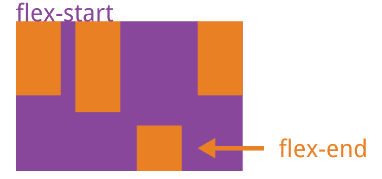
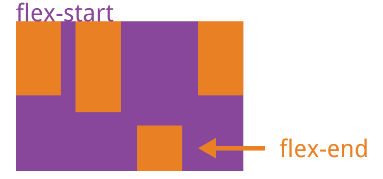

2019/11/21
Author: guoqzuo
flex布局align-self使用场景
一般flex布局，使用algin-items: center垂直居中后，item子项某一个高度比较高，其他子项的高度也会是高度最高的子项高度。设置border时会特别明显。如果需要让item高度适应内容，就可以使用 align-self: flex-start。

一般flex布局，使用algin-items: center垂直居中后，item子项某一个高度比较高，其他子项的高度也会是高度最高的子项高度。设置border时会特别明显。如果需要让item高度适应内容，就可以使用 align-self: flex-start。
